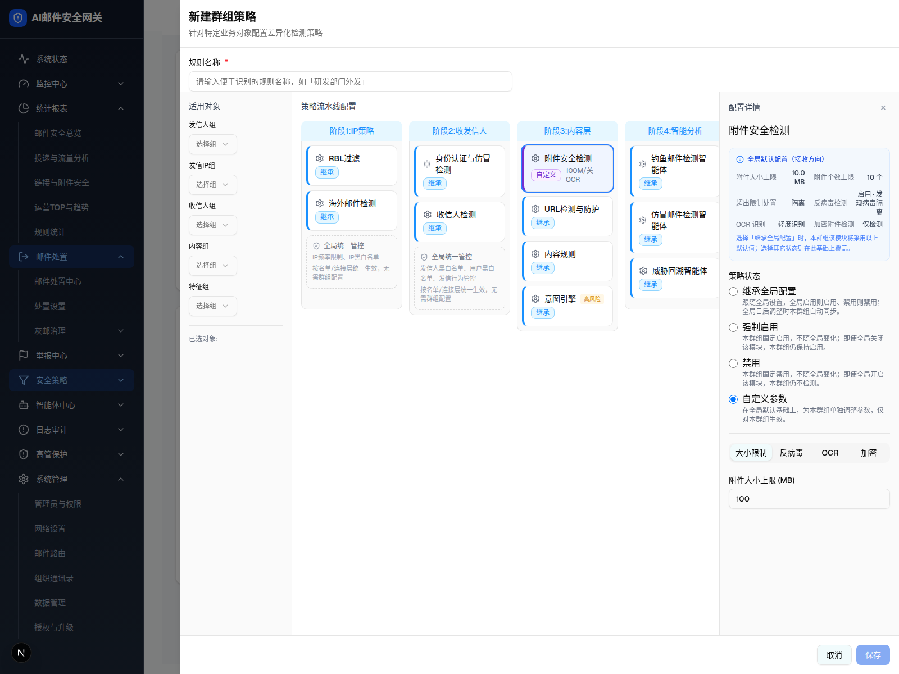

| 所属组件 | 2.3 群组策略编辑抽屉 GroupPolicyDrawer |
| 主文件 | filter-rules-group-policy/index.html |
| 触发路径 | 层级1 中栏「附件安全检测」策略卡 → 右栏面板 → 选「自定义参数」 |
| demo 源 | renderConfigPanel + PolicyGlobalReference + 附件参数 L1758-L1899 |
触发路径：点击策略卡 → renderConfigPanel()；选「自定义参数」radio → 展开附件 4 Tab 参数
四档 radio 原生可选；附件参数 4 Tab 可切换；大小/OCR 可改（本图为「自定义参数」态）
针对特定业务对象配置差异化检测策略
已选对象:
IP频率限制、IP黑白名单
按名单/连接层统一生效，无需群组配置
发信人黑白名单、用户黑白名单、发信行为管控
按名单/连接层统一生效，无需群组配置
选择「继承全局配置」时，本群组该模块将采用以上默认值；选择其它状态则在此基础上覆盖。

| 元素 | 说明 |
|---|---|
| 入口 | 中栏点击「附件安全检测」策略卡 → 右栏 configPanelOpen |
| 全局默认配置参照卡 | 蓝底(border-blue-100/bg-blue-50/60)：附件大小/个数上限、超限处置、反病毒、OCR、加密（AttachmentGlobalReference，接收方向） |
| 策略状态（四档单选） | 继承全局配置 / 强制启用 / 禁用 / 自定义参数（原生 radio，附带灰字语义备注）；「自定义参数」仅 supportsCustom(form≠cloud) 且 hasParams 时出现 |
| 自定义参数 Tabs | 选中「自定义参数」后出现：大小限制 / 反病毒 / OCR / 加密 4 Tab |
| 大小限制 | 附件大小上限(MB) number Input，默认 100 |
| OCR | 「启用OCR识别」Switch |
| 卡片摘要 | custom+attachment → 卡片显示 {size}M/{开|关}OCR |
| 比对项 | demo 实际 DOM | 嵌入 spec 的 HTML | 是否一致 |
|---|---|---|---|
| 外层 | div.fixed.inset-0.z-50 | .gp-shell | ⚠ 有意差异 |
| 节点总数（自定义态） | 282 | 282 | ✅ |
| 策略状态 radio 数 | 4（继承/强制/禁用/自定义） | 4 | ✅ |
| 参数 Tab 数 | 4（大小/反病毒/OCR/加密） | 4 | ✅ |
| 「自定义参数」单选 | AI/传统版渲染（cloud 不渲染） | 已包含（本图 AI 版） | ✅ |